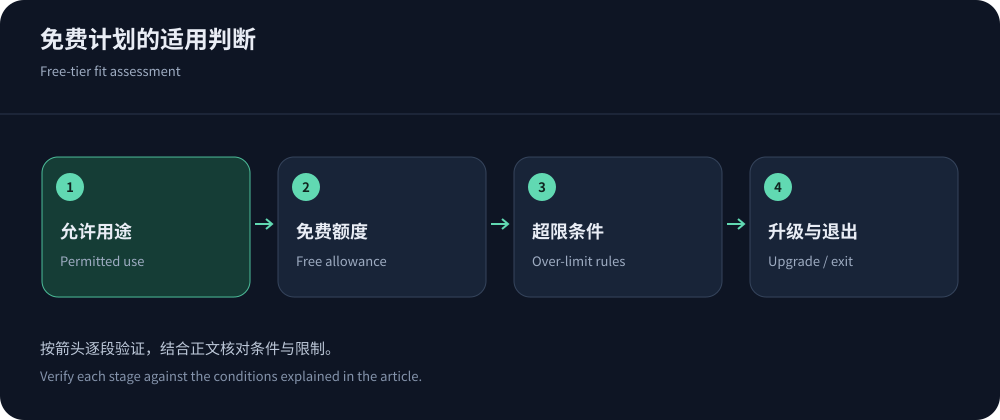
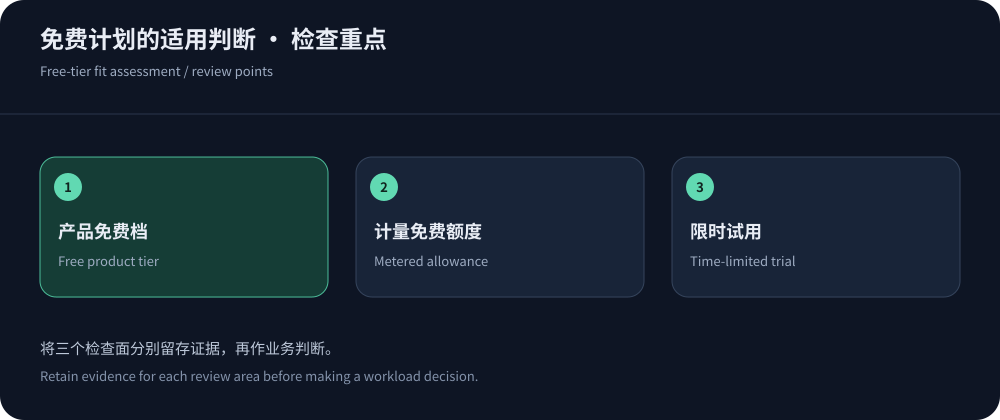

免费CDN可以用，但先确认免费的是哪一部分
个人博客、文档站或低风险公开资源，可以从免费CDN开始。前提是计划支持自己的内容类型、流量和配置，并且团队接受相应支持与服务承诺。免费计划、按量产品中的免费额度、一次性试用抵扣并不相同：前者是一档产品，第二种可能超额付费，第三种到期后可能恢复正常价格。它们不能混在同一张“永久免费”清单里。
本文核实日期为2026年10月14日，所有产品条件仍需在开通时确认。对关键交易，不应把能免费打开网页等同于已有完整运营保障；对小型内容站，也不必因为没有购买最高档就假定不能使用。选择取决于允许用途、可观测性与故障后果。先理解CDN基本原理，再判断免费能力是否覆盖需要的路径。
使用免费服务仍需维护自己的域名与备份。若服务条件变化，准备好可迁移的内容和配置，能够减少被迫停站的影响。零月费不应成为放弃正常运维记录的理由。
四种公开入口，不能都叫无限免费加速
Cloudflare套餐、CloudFront定价、Fastly价格和CDN5官网均提供可核实的低门槛入口，但范围不同。表格只摘取与选型相关的条件；日志、规则、支持、用途和资源限制还要按具体产品阅读。
| 产品 | 已核实入口 | 关键边界 |
|---|---|---|
| Cloudflare Free | 网络与CDN产品公开列示每月0美元计划，面向个人或非关键项目。 | 不能推断高级Bot、完整日志、优先支持或大陆网络全部包含。 |
| CloudFront Free固定套餐 | 现行计划列示0美元/月、100GB传输与100万次请求额度。 | 这是现行套餐条件，不能叠用旧资料中的免费规则或假定其他云资源全免。 |
| Fastly计量免费额度 | 价格页面列出交付100GB和请求100万次的免费档量，相关产品分别计量。 | 不是所有安全和媒体服务的无限免费套餐；检查超额费及产品适用范围。 |
| CDN5免费版 | 官网提供防护测试入口，列示有限域名、端口与防护宣传值。 | 明确不支持网络加速、多线网络及WebSocket，不能推荐成免费加速版。 |


免费额度不等于零账单风险
如果CDN需要连接对象存储、负载均衡、源站云主机或日志服务，这些资源可能有自己的计费。某项产品包含交付量，也不代表回源、请求、函数执行或数据保留全部无成本。开通前查看是否需要支付方式、额度重置周期、超额动作和取消路径，按实际条件设置预算提醒。不要等额度用完才寻找开关。
将多个账号拆分使用以规避条件并不是可靠的成本管理。更好的办法是测量资源大小、压缩、缓存行为和异常请求，在合法使用范围内减少不必要工作。预算表中把免费额度与总使用量分开，保留超额后的价格或停用条件。一个可解释的低价方案，往往比不清楚边界的“全免费”承诺更适合长期运行。
免费计划的性能，也需要真实业务验证
付费等级可能改变功能和支持，但不能仅凭价格推断每个地区的速度。使用相同资源、源站与客户端，分别测试热缓存、冷缓存和动态路径，覆盖主要用户运营商和高峰。保留失败率、P95和内容检查，不只看首页一次打开速度。免费试点的节点调度也不一定代表另一个付费产品的线路，因此升级后仍需验收。
若免费档看不到详细日志，可以先用源站日志和浏览器观察定位一部分问题，但要承认边缘内部证据有限。对于必须迅速解释故障的业务，日志缺失本身可能就是升级理由。若只是低风险文档站，团队可能接受这种取舍；关键在于主动决定，而不是发生事故后才发现无法取得记录。
缓存边界不能因为免费而放松
依据RFC 9111，共享缓存只能在正确语义下复用响应。登录页、账户、购物车与私人API不应因为规则方便就共享。免费计划规则数量有限时，更应保持少量清晰规则，不要用一个全站通配绕开业务差异。图片尺寸、语言、授权和版本参数，需要在缓存键中得到正确表达。
测试至少包含两个不同账号、退出状态和更新后的内容。出现私人内容混用，应立即停止相关缓存并调查影响；不能因为页面很快就继续运行。回源证书校验、源站访问限制和管理面权限同样必不可少。CDN是否收费，不改变这些部署责任。
什么时候值得付费升级
升级触发点应该具体：需要可承诺的支持、更多规则、可导出日志、长连接、特定区域或更高合法流量额度。若主要瓶颈是数据库慢查询，升级CDN不一定有用；若需要的视频产品并不在普通套餐内，就应选择相应服务，而不是只提升同一档位。对CDN5，免费测试与付费加速的能力差别应特别确认。
付款之前保存当前配置与性能基线，核实升级是否改变节点、计费、证书或规则。让供应商说明升级生效、降级和退款条件。详细预算可沿CDN购买指南展开。用缺失能力解释升级，比为了追求“企业级”标签而购买更贵套餐更容易得到可衡量收益。


即使免费，也要留好退出路径
免费服务仍可能调整条款、产品或额度。保留域名控制权、配置导出、证书续期流程和必要日志，避免只在单一控制台存放关键运行信息。迁移时逐项验证新入口，旧入口保持保护，确认DNS与已有会话的过渡。停用后撤销旧令牌和回源权限，检查关联资源是否仍收费。
每次业务增加新功能或进入新市场，重新核对免费档是否仍适用。公开静态站可能长期保持简单，会员、支付和实时消息则引入新的责任。免费CDN的合理用法，是用清楚的边界降低启动成本，而不是把零月费当作任何负载、故障与服务承诺都已解决的证据。
免费计划的变更通知也应有人接收，账户邮箱与域名所有者保持可联系。